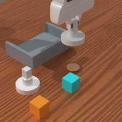
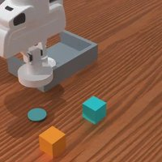
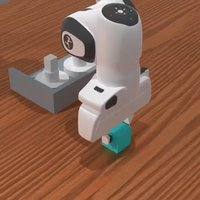
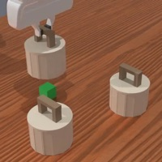
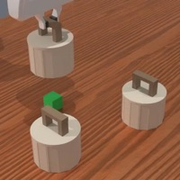

Many manipulation tasks require recalling briefly visible details, such as an object's previous location or a hidden texture pattern. We identify this as visual moment memory: retaining precise visual evidence for use after it is no longer visible. To study this problem, we introduce VMBench, whose tasks require robots to remember briefly visible locations, appearances, and their associations. We propose MomentMem, which decouples memory from action execution: a VLM memorizer selects and stores keyframes, and an executor policy uses these keyframes and the current observation to predict actions.
Robots often need visual information that is no longer visible. How this information is stored determines whether precise details remain available for later actions.


···
Put each cube on the color that was under the stamp.Success depends on the exact color revealed at each location.
Each task requires remembering briefly visible locations, appearances, or their associations. This information varies across trials and guides later actions.
A VLM memorizer selects and stores keyframes. A VLA executor uses these keyframes and the current observation to predict actions. The two modules communicate only through keyframes.


Average VMBench success when each training choice is removed.
Point annotation = one fixed positive frame per moment. w/o scheduled sampling = train only on perfect memory histories.
Success rate per task for every method. Hover a row for a sorted list.
Can the memorizer adapt to a new task with few memory annotations? We train the memorizer on eight VMBench tasks and adapt it to the held-out Flash Beacon task with only five memory-annotated demonstrations. All settings use the same 100 action demonstrations; few-shot refers only to memory supervision.
Successful trials out of 30 per task.
Explore Cube: the robot must find the cube hidden under one of three upside-down cups. Revisiting a cup counts as failure.
@article{momentmem,
title={MomentMem: Memorizing Key Moments for Robot Manipulation},
author={Zhao, Guangyu and Zhang, Yongchang and Jiang, Ruizhang and Yu, Zhihong and Zhang, Yuhao and Wu, Tao and Zhou, Qimin and Shi, Kunsong and Wen, Haoran and Zhang, Zeyu and Li, Yin and Zhan, Kun and Zhong, Yiwu},
journal={arXiv preprint arXiv:2611.26745},
year={2026}
}